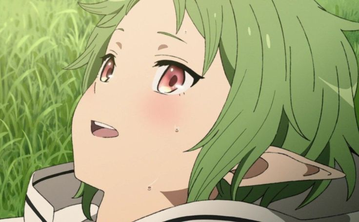
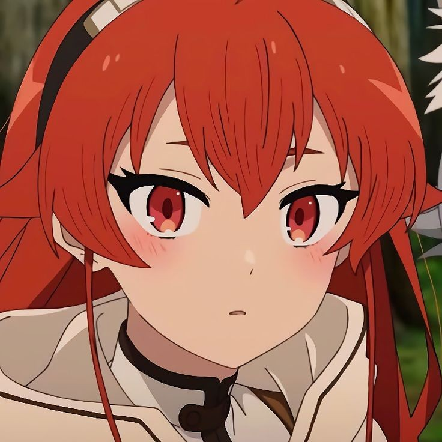
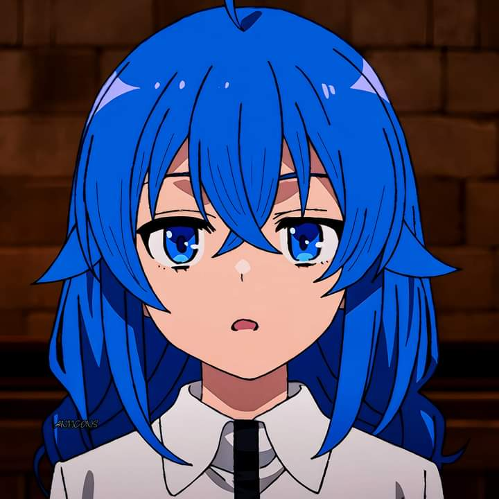
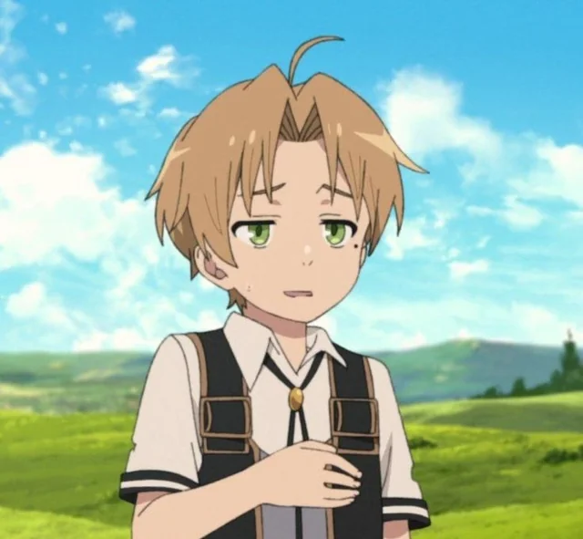

Una historia de reencarnación, magia, crecimiento y segundas oportunidades
Mushoku Tensei cuenta la historia de un hombre que, tras morir en su mundo original, reencarna en un mundo de fantasía como Rudeus Greyrat. Conservando sus recuerdos, decide aprovechar esta nueva vida para cambiar, aprender magia y convertirse en una mejor persona.
A lo largo de la historia, Rudeus aprende magia, conoce nuevos compañeros y enfrenta situaciones que lo hacen madurar. Su viaje está lleno de aventuras, errores, aprendizajes y momentos importantes que marcan su crecimiento personal.
| Personaje | Descripción |
|---|---|
| Rudeus Greyrat | Protagonista reencarnado |
| Roxy Migurdia | Maestra de magia de Rudeus |
| Eris Boreas Greyrat | Compañera de aventuras |
| Sylphiette | Amiga de la infancia de Rudeus |
| Ruijerd Supardia | Guerrero de la raza Supard |
Mushoku Tensei trata temas como la superación personal, la familia, el arrepentimiento, la magia, la aventura y la oportunidad de empezar de nuevo.
📚 Novela ligera |
🖼 Imágenes y GIFs |
👥 Personajes |
⬅ Volver |